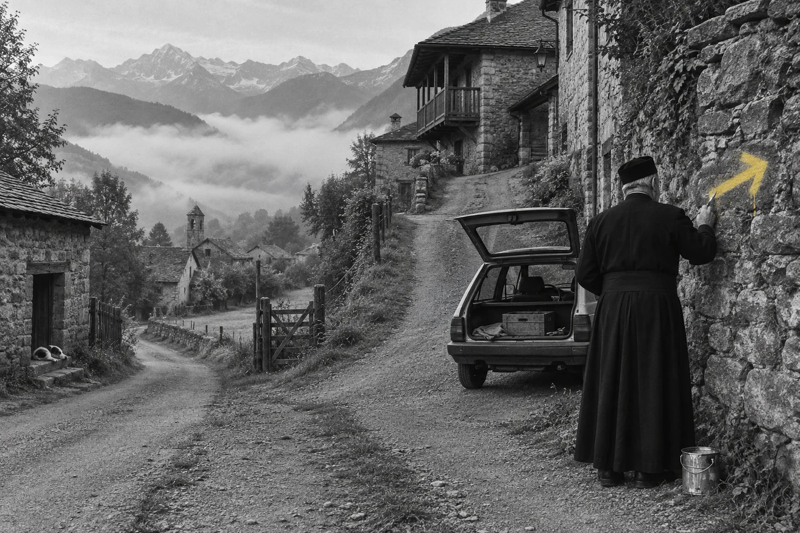
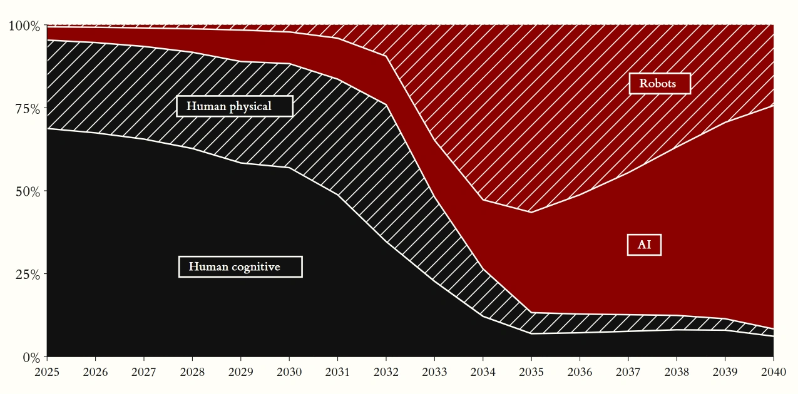

지구 위에 세운
인문학 구독
하루 10분, 지구 위를 날아 그림 한 점, 음악 한 곡, 별 하나를 만나고
그 끝에서 책 한 권을 손에 듭니다.
월 30,030원2026년 12월 25일(금) 개관
EG 둘러보기대 교양의 시대
피레네의 한 마을에서, 노란 페인트를 차에 싣고 다니던 신부가 경찰에게 붙잡혔습니다. 갈림길마다 화살표를 칠하던 중이었습니다. 무엇을 하느냐는 물음에 그는 이렇게 답했습니다.
「프랑스에서 넘어올 대침공을 준비하고 있습니다.」
그가 세상을 떠나고 몇 해 뒤, 잊혀 가던 산티아고 순례길은 정말로 순례자들로 붐비기 시작했습니다.

미국의 한 AI 연구단체는 2040년 미국 경제에서 사람이 맡는 노동의 몫이 10분의 1 아래로 내려가리라고 내다봅니다.

일은 AI에게 넘어가고, 사람 손에는 시간이 남는 세상입니다. 그 세상에서 많은 사람이 가장 먼저 만나는 것은 「오늘은 뭘 하지」 하고 묻는 아침일 겁니다.
그 물음의 답은 누구도 대신 찾아 주지 못합니다. 좋은 그림과 음악과 책과 사람을 오래 만나며 몇 해에 걸쳐 자라는 힘이니까요. 옛사람들은 이 힘을 기르는 일을 교양이라고 불렀습니다.
일이 떠난 자리에서, 자기 삶을 채우는 일이 사람에게 남는 가장 큰 일이 되는 시대. 저희는 이것을 대 교양의 시대라고 부릅니다.
화살표는 순례자가 몰려온 뒤에 칠하면 늦습니다. 지금 먼저 길을 나서는 분들을 위해 식탁 하나를 차려 두었습니다.
영혼의 갈증과 허기를 달래려
미지의 양식을 찾아 헤매는
1.5% 미식가를 위한 영혼의 식탁